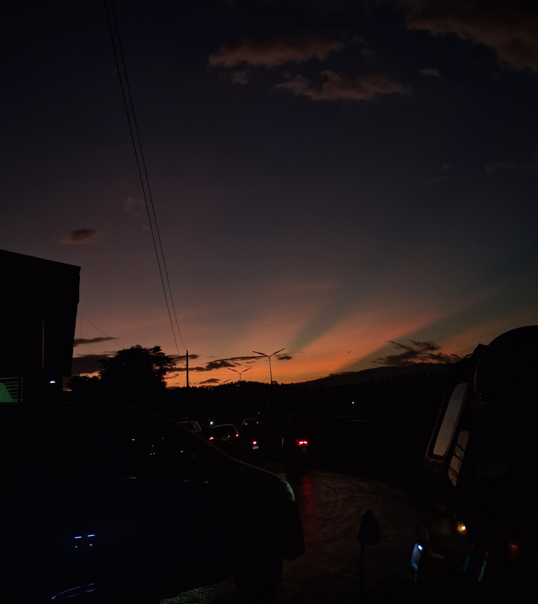
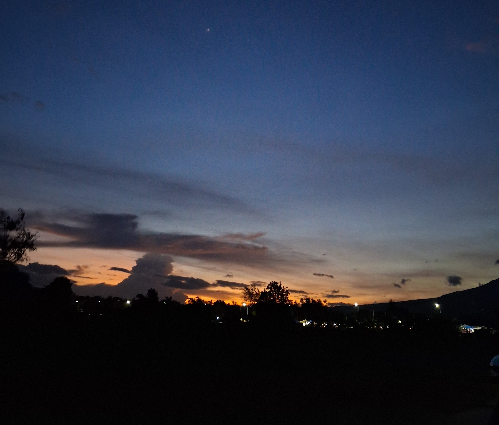
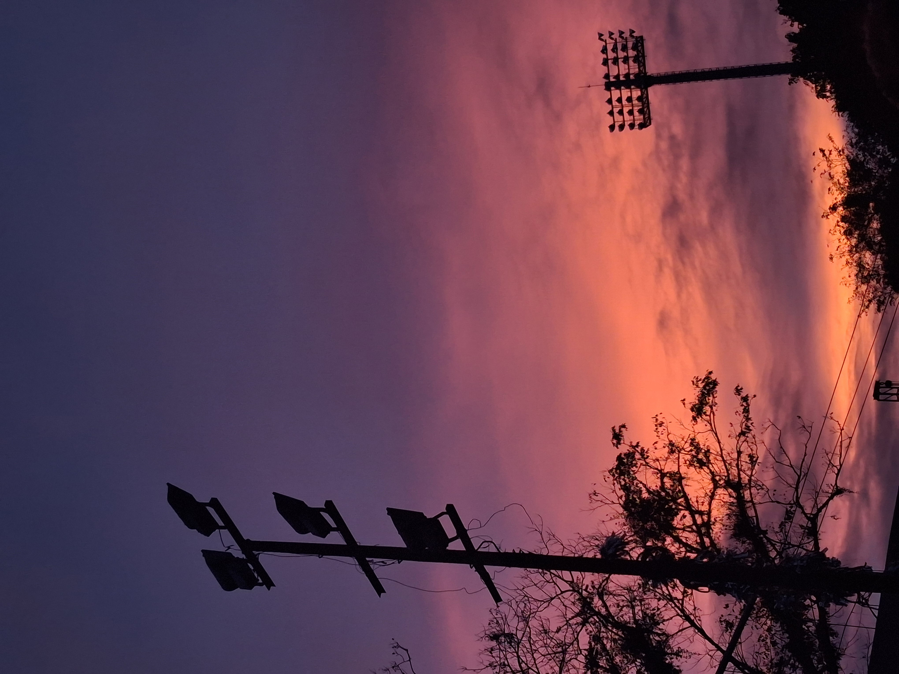
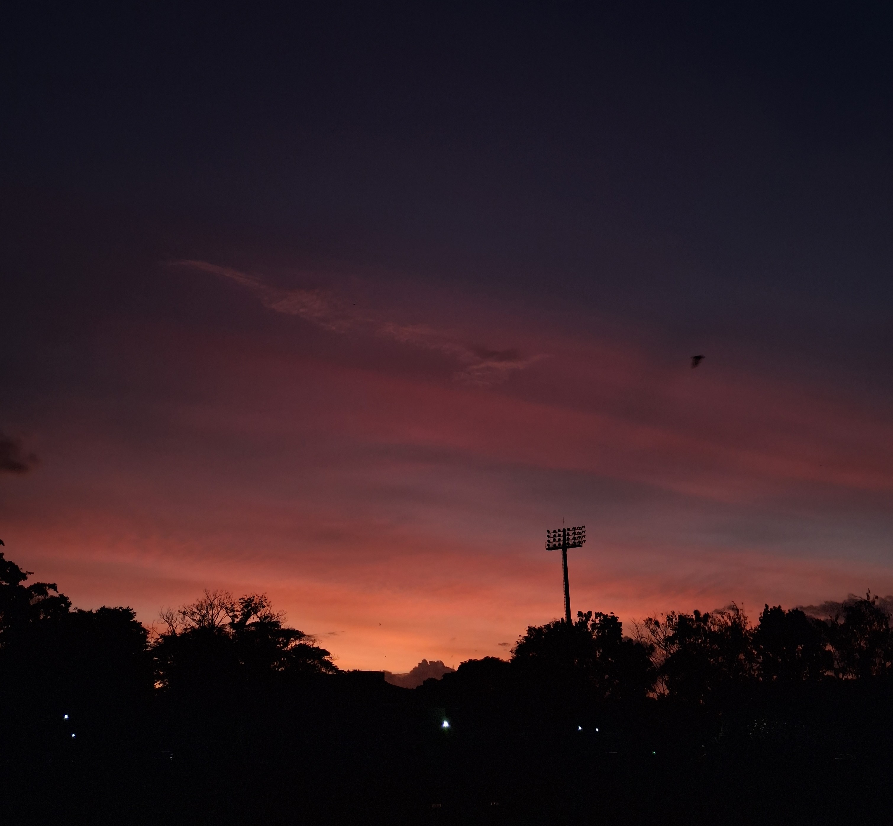
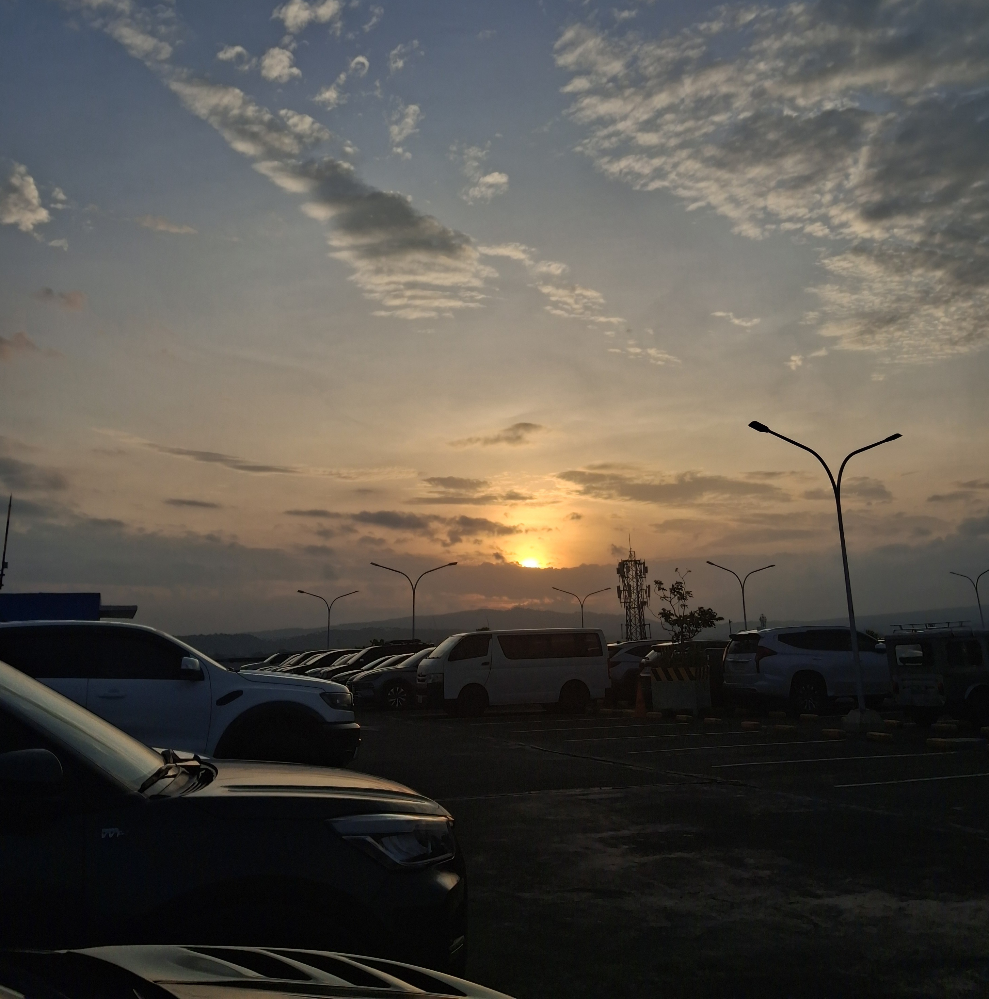

← All Posts
Joyce Llorera
August 16, 2026

Sunsets
One of the thing I always find myself doing whenever I get the chance is taking photos of sunsets. There is something about watching the sky change colors that makes me feel more present and connected to the world around me. Sunsets have always been beautiful to me, no matter what colors fill the sky. Sometimes they're soft and simple, while other times they're bright and colorful. Either way, I never get tired of looking at them or capturing them.
For me, sunsets are also a simple way of making myself feel better. Whenever I take a photo of one, it feels like a small reminder that I'm here, I'm outside, and I'm taking a moment to appreciate something beautiful. Even on ordinary days, stepping outside and watching the sky can make things feel a little lighter. Sometimes, I even stay outside until it gets dark just to watch the sunset completely fade. I love seeing the sunlight reflect on the clouds and turn the sky into different shades of color. It's such a simple thing, but somehow, it always makes me feel lighter.
Sadly, many of those sunset photos are no longer with me. My old phone was already gone, and I wasn't able to retrieve or transfer the photos I had taken before getting a new one. I had captured so many sunsets since my high school days, each one saved simply because I thought the sky looked beautiful at that moment. It makes me a little sad knowing that I can no longer look back at those photos, especially because some of them probably captured moments and places I have already forgotten. Still, I like to think that even though the pictures are gone, I was there when I took them. I remember the feeling of stopping for a moment, looking up at the sky, and thinking that it was beautiful enough to capture. And now, whenever I see another beautiful sunset, I make sure to take a photo of it—not just to keep the picture, but to keep adding new memories to my collection.
Read More

Scenery
February 24, 2026

Online Games
February 25, 2026

Memory Keeping
February 26, 2026

Dream Careers
August 05, 2026

The Child I Was
August 07, 2026
Gallery




